R/plot.training_test_comparison.R
plot.trainig_test_comparison.RdFunction plot.training_test_comparison plots dependecy between model performance on test and trainig dataset based on
training_test_comparison object. Green line indicates y = x line.
# S3 method for training_test_comparison
plot(x, ...)- object created with training_test_comparison function.
- other parameters
ggplot object
library("mlr")
library("DALEXtra")
task <- mlr::makeRegrTask(
id = "R",
data = apartments,
target = "m2.price"
)
learner_lm <- mlr::makeLearner(
"regr.lm"
)
model_lm <- mlr::train(learner_lm, task)
explainer_lm <- explain_mlr(model_lm, apartmentsTest, apartmentsTest$m2.price, label = "LM")
#> Preparation of a new explainer is initiated
#> -> model label : LM
#> -> data : 9000 rows 6 cols
#> -> target variable : 9000 values
#> -> predict function : yhat.WrappedModel will be used ( default )
#> -> predicted values : No value for predict function target column. ( default )
#> -> model_info : package mlr , ver. 2.19.0 , task regression ( default )
#> -> predicted values : numerical, min = 1792.597 , mean = 3506.836 , max = 6241.447
#> -> residual function : difference between y and yhat ( default )
#> -> residuals : numerical, min = -257.2555 , mean = 4.687686 , max = 472.356
#> A new explainer has been created!
learner_rf <- mlr::makeLearner(
"regr.ranger"
)
model_rf <- mlr::train(learner_rf, task)
explainer_rf <- explain_mlr(model_rf, apartmentsTest, apartmentsTest$m2.price, label = "RF")
#> Preparation of a new explainer is initiated
#> -> model label : RF
#> -> data : 9000 rows 6 cols
#> -> target variable : 9000 values
#> -> predict function : yhat.WrappedModel will be used ( default )
#> -> predicted values : No value for predict function target column. ( default )
#> -> model_info : package mlr , ver. 2.19.0 , task regression ( default )
#> -> predicted values : numerical, min = 1793.529 , mean = 3504.951 , max = 6241.17
#> -> residual function : difference between y and yhat ( default )
#> -> residuals : numerical, min = -554.0756 , mean = 6.57304 , max = 733.4747
#> A new explainer has been created!
learner_gbm <- mlr::makeLearner(
"regr.gbm"
)
model_gbm <- mlr::train(learner_gbm, task)
explainer_gbm <- explain_mlr(model_gbm, apartmentsTest, apartmentsTest$m2.price, label = "GBM")
#> Preparation of a new explainer is initiated
#> -> model label : GBM
#> -> data : 9000 rows 6 cols
#> -> target variable : 9000 values
#> -> predict function : yhat.WrappedModel will be used ( default )
#> -> predicted values : No value for predict function target column. ( default )
#> -> model_info : package mlr , ver. 2.19.0 , task regression ( default )
#> -> predicted values : numerical, min = 2128.342 , mean = 3504.254 , max = 6057.521
#> -> residual function : difference between y and yhat ( default )
#> -> residuals : numerical, min = -525.3419 , mean = 7.269583 , max = 703.5345
#> A new explainer has been created!
data <- training_test_comparison(explainer_lm, list(explainer_gbm, explainer_rf),
training_data = apartments,
training_y = apartments$m2.price)
plot(data)
